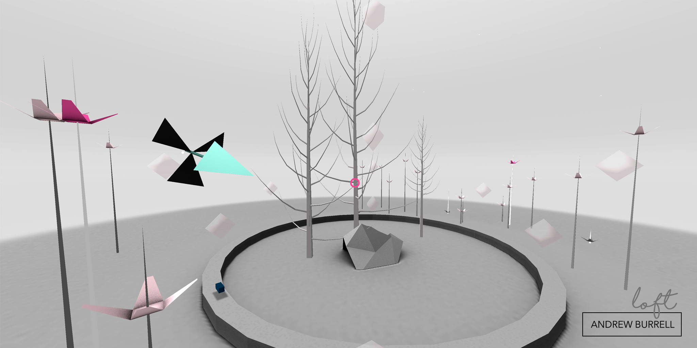
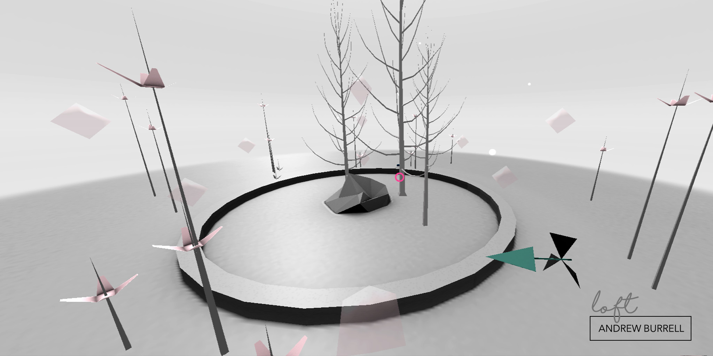
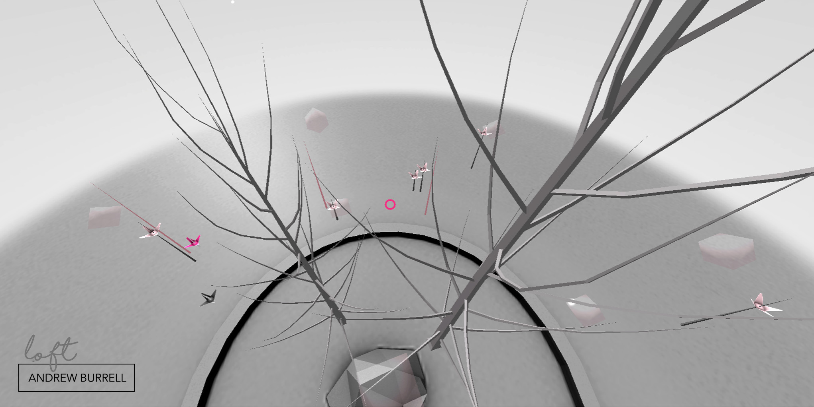

loft
Andrew Burrell
- 
- 
- 
Experience Now
Description
Loft uses gaze based navigation, use the pink cursor to look and select the ‘start’ icon, then use the same technique to gaze at the translucent pink diamonds that will appear and navigate through the space.
‘Loft’ is a webVR narrative experience. It consists of a self contained environment that plays out for the viewer based on its own logic. With limited agency granted to them, the viewer’s role will initially feel like one of pure observations, but as the world unfolds around them, they will find that their point of observation, and how they choose to navigate the space, will make critical differences to how they experience the narrative and logic of this world.
As well as investigating ways of presenting fragmented and abstract narratives within virtual reality, ‘Loft’ explores an unusual aspect of virtual reality technology in its ability to be both immersive and distancing at the same time. It intentionally highlights the disembodied “head in a jar” feeling, while at the same time providing an abstract environment that invites exploration and immersion and the potential for a more visceral reaction to the space.
On initiating the work, a number of ‘virtual seeds’ are randomly spread around the environment, and begin to grow vertically. At the same time an entity begins to fly through the space, exploring its own new environment. As the seeds mature they will flower, attracting the flying entity, which will deliver fragments of spatialise audio narrative to each flower as it visits them. This flowers will eventually die and with them the fragment of audio. Over a period of approximately 6 to 7 minutes the world will come to life and then return to a state of quiet. The viewer can explore the resulting audio environment by using a look navigation technique. By looking at the translucent pink diamonds in the space they will move towards them and be able to navigate throughout the environment, and by doing so mixing the spatialised narrative that is forming around them into their own discreet narrative.
Bio
Dr. Andrew Burrell is a new media artist, writer and educator working with emerging technologies in the realms of real time 3d, interactive installation and networked environments. His work investigates the relationship between imagined and remembered narrative and the constitution of identity, and demonstrates an ongoing creative and thematic interest in the multi-layered biological and technological encoding of human subjectivity. His practice revolves around the collection, writing and representation of narrative ‘fictions’ and the interplay of art, philosophy, technology and the life-sciences, and challenges accounts of the self as being both continuous and linear. His networked projects in virtual and augmented environments have received international recognition.
Compatibility
| Chrome | Firefox | Safari | |
|---|---|---|---|
| Desktop (360) | ✔ | ✔ | ✔ |
| Mobile Device | ✔ | ✔ | |
| Oculus Rift | ✔ (Chromium) | ✔ (Nightly) | |
| HTC Vive | ✔ (Chromium) | ✔ (Nightly) |
Note: You may need to do some special setup for your browser to work with a VR headset like the Oculus Rift or HTC Vive.